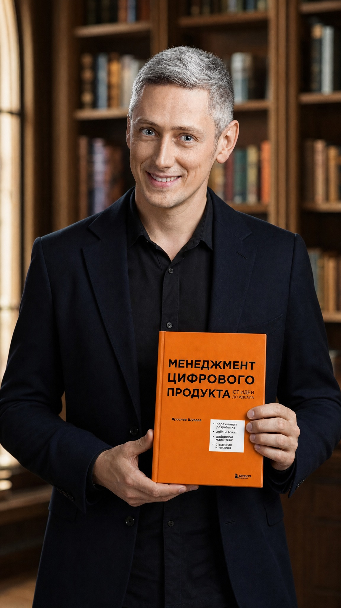
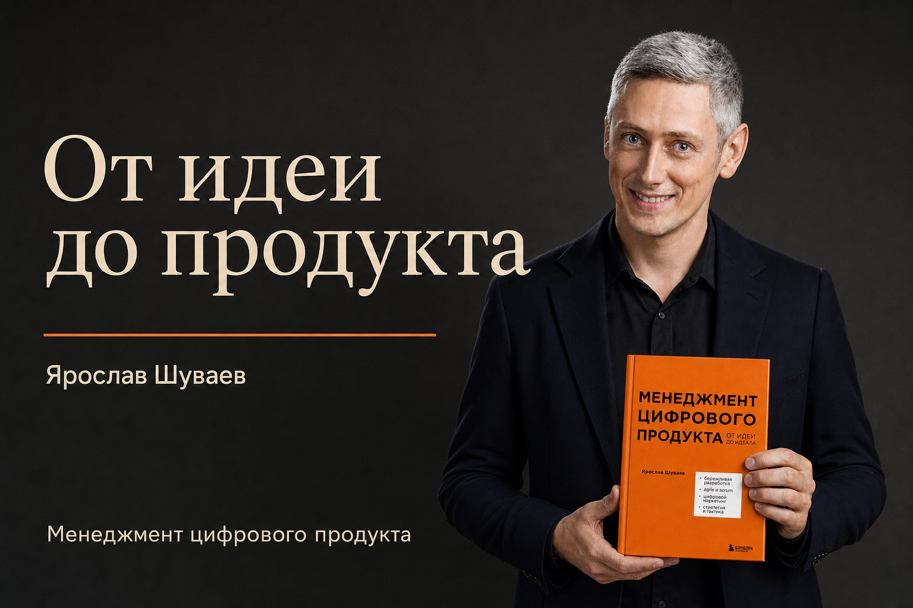
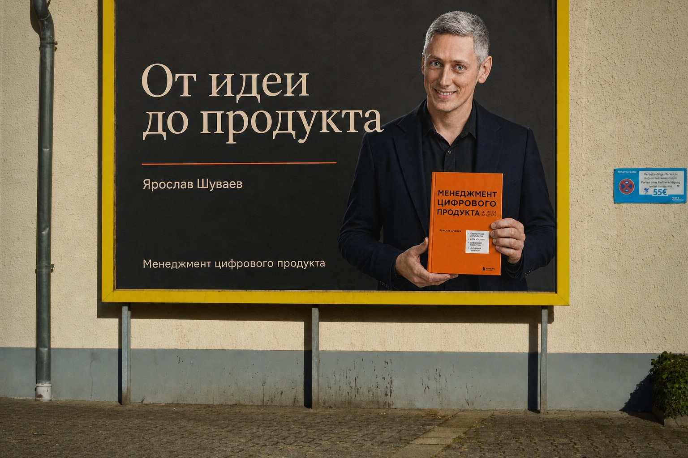

1. Векторная анимация
Задача: подготовить короткую заставку для книжной подборки, сохранив контроль над текстом, цветами и движением.
Открыть этот кейс в презентации ↗Результат: самостоятельный SVG и шестисекундный ролик. DeepSeek пишет код, браузер показывает анимацию.
- Скопируйте первый промпт в DeepSeek. Сохраните ответ без ограждений Markdown в файл
book.svgи откройте его в браузере. - Вторым промптом попросите HTML с загрузкой своей обложки. SVG хранит векторные элементы, а обложка встраивается как изображение.
- Третьим промптом добавьте запись видео. Оставьте вкладку активной до завершения записи.
Создай один самодостаточный анимированный SVG: вертикальная рекламная заставка книжной подборки, viewBox="0 0 720 1280", длительность 6 секунд. Текст: «От идеи к новой главе», внизу «Откройте следующую страницу». В центре книга собирается из отдельных векторных деталей: обложки, корешка, двух блоков страниц, затем появляются название «НОВАЯ ГЛАВА» и маленькая звезда. Тёмный сине-зелёный фон, кремовые страницы, коралловая обложка, мягкий зелёный акцент. Крупная типографика, много воздуха. Все элементы нарисованы средствами SVG; без растровых картинок, внешних шрифтов, библиотек и сетевых запросов. Используй animate и animateTransform, последовательно вводи детали в первые 3 секунды, последние 3 секунды держи готовую композицию. Итоговое состояние сохраняй через fill="freeze". Текст не должен выходить за границы. Выдай полный код SVG, пригодный для сохранения в файл book.svg и открытия в браузере.
Создай один HTML-файл для книжной рекламы с встроенным SVG 720×1280. Пользователь загружает PNG, JPEG или WebP с обложкой; FileReader преобразует картинку в data URL, который встраивается в SVG через image href. Никаких внешних ссылок на изображение. Сохраняй пропорции и не обрезай обложку. За первые 1,5 секунды книга плавно поднимается на место, затем появляется звёздчатый бейдж. Текст бейджа пользователь меняет в поле ввода; по умолчанию «Читайте». Бейдж не перекрывает название книги. Общая длительность 6 секунд. Добавь «Повторить» и «Скачать SVG». В скачанном SVG должны сохраняться обложка и самостоятельная анимация animate/animateTransform, без JavaScript. Внешние зависимости запрещены. Ввод пользователя экранируй перед вставкой в XML. Не добавляй неподтверждённые скидки или статус лидера продаж. Выдай полный HTML.
Доработай предыдущий HTML: добавь кнопку «Сохранить видео». Используй общую функцию renderFrame(t), которая вычисляет все положения, масштабы и прозрачности по времени в секундах и возвращает статический SVG для данного кадра. Эта же функция должна управлять предпросмотром и записью, чтобы результат совпадал. Не рассчитывай, что drawImage самостоятельно перенесёт CSS/SMIL-анимацию SVG: в каждый кадр подставляй уже вычисленные атрибуты. Для каждого кадра создай Blob image/svg+xml, загрузи его в Image, дождись decode(), нарисуй на Canvas 720×1280. Запиши canvas.captureStream(30) через MediaRecorder. Выбирай MIME через MediaRecorder.isTypeSupported: MP4, если поддерживается, иначе WebM; расширение файла должно соответствовать реальному контейнеру. Не обещай MP4 во всех браузерах. Встрой изображение обложки в data URL, чтобы Canvas оставался доступен для экспорта. Запиши ровно один шестисекундный проход, дождись последних dataavailable и stop, скачай непустой Blob. На время записи блокируй изменение композиции, показывай прогресс, после записи останавливай MediaStreamTrack и освобождай object URL. Покажи понятную ошибку, если браузер не поддерживает запись. Предупреди, что вкладка должна оставаться активной. Без серверов, ключей, платных сервисов и внешних библиотек. Выдай полный HTML, который можно открыть локально.
Открыть интерактивный пример: обложка, бейдж и запись видео
{kind=link}
{kind=link}
Скачиваемый SVG содержит собственную анимацию. Для видео каждый кадр рисуется на Canvas и записывается через MediaRecorder. MP4 доступен не во всех браузерах; редактор выбирает поддерживаемый формат, включая WebM.
2. Растровые изображения продукта
Задача: получить предметное изображение книги для карточки, поста или рекламного баннера.
Открыть этот кейс в презентации ↗Результат: пакшот — изображение продукта, на котором видны книга и её оформление.

Сначала задайте сцену
Промпт описывает объект, окружение, композицию, свет, формат и то, что нужно сохранить. Слова cinematic или professional photo задают направление, но не заменяют эти детали.
- Откройте Qwen и войдите в аккаунт.
- В меню «+» выберите Create Image. Через Upload attachment приложите обложку.
- Вставьте промпт выбранного стиля. Если формат задаётся отдельно, выберите 1:1.
- Сверьте название, имя автора, логотип и пропорции. Сохраните лучший результат.
Qwen3 — семейство моделей. Режимы создания изображений и видео в Qwen Studio выбираются отдельно; состав инструментов зависит от аккаунта.

Ты арт-директор издательства. Подготовь один готовый промпт для генератора изображений. Задача: рекламная карточка книги в социальной сети. Книга: «Менеджмент цифрового продукта. От идеи до идеала», Ярослав Шуваев. Аудитория: начинающие продакт-менеджеры. Вложение: оригинальная оранжевая обложка. Формат: 1:1. Стиль: минималистичная предметная фотография. Опиши объект, окружение, композицию, свет и ограничения. Обложка, название и имя автора должны остаться неизменными. Не добавляй неподтверждённые скидки или награды. Выдай только готовый промпт.
Используй приложенную обложку как точный референс книги. Предметная фотография: книга стоит на невысоком постаменте цвета слоновой кости. Однотонный светлый фон, мягкий студийный свет сверху слева, аккуратная тень, много свободного пространства. Квадратный кадр. Книга занимает около двух третей высоты. Покажи её целиком, лицевой стороной к зрителю. Сохрани оранжевый цвет, все надписи, имя «Ярослав Шуваев», логотип и пропорции обложки. Реалистичные бумага и переплёт. Без дополнительных заголовков, водяных знаков и других книг.
Используй приложенную обложку как точный референс книги. Рекламная композиция: реалистичная книга среди трёх крупных геометрических объектов — кораллового шара, светло-зелёной складчатой плоскости и тёмно-бирюзовой арки. Глубокий тёмный фон, направленный студийный свет. Абстрактное окружение не закрывает обложку. Квадратный кадр. Книга занимает около двух третей высоты. Покажи её целиком, лицевой стороной к зрителю. Сохрани оранжевый цвет, все надписи, имя «Ярослав Шуваев», логотип и пропорции обложки. Реалистичные бумага и переплёт. Без дополнительных заголовков, водяных знаков и других книг.
Используй приложенную обложку как точный референс книги. Фотореалистичная рекламная фотография: книга стоит на тёмном деревянном столе в библиотеке. Тёплый боковой свет из окна, глубокие прохладные тени, полки мягко размыты. Книга и обложка резкие, фон второстепенный. Квадратный кадр. Книга занимает около двух третей высоты. Покажи её целиком, лицевой стороной к зрителю. Сохрани оранжевый цвет, все надписи, имя «Ярослав Шуваев», логотип и пропорции обложки. Реалистичные бумага и переплёт. Без дополнительных заголовков, водяных знаков и других книг.
Подготовь промпт для атмосферной иллюстрации к книге «Менеджмент цифрового продукта. От идеи до идеала». Описание: книга об управлении цифровыми продуктами — от идеи и разработки до маркетинга и стратегии. Назначение: горизонтальный баннер для статьи. Образ: рабочий стол, на котором разрозненные карточки постепенно складываются в понятный план. Сохрани спокойную деловую атмосферу, мягкий дневной свет и реалистичные материалы. Слева оставь свободное место для заголовка; сам текст не рисуй. Не выдумывай цитаты и факты о книге. Выдай один промпт.
Сравните стили на одной книге
Превью показывает сохранённый квадратный результат. Выбранный формат применяется к новому промпту.

Результаты сравнения получены в OpenAI GPT Image. Эти же постановки задачи можно повторить в Qwen; изображения разных сервисов будут отличаться. Точные промпты показанных генераций.
{kind=link}
{kind=link}
3. Автор с книгой
Задача: подготовить узнаваемый портрет автора для анонса, рекламы и первого кадра видео.
Открыть этот кейс в презентации ↗Результат: автор держит книгу, лицо и название хорошо видны.


В промпте назначьте каждому изображению роль. Отдельно зафиксируйте лицо, оформление книги и положение рук. Для будущего видео выбирайте спокойную позу.
Создай фотореалистичный рекламный портрет. Фото 1 — точный референс внешности Ярослава Шуваева; фото 2 — оригинальная обложка книги. Сохрани лицо, возраст, седые волосы и индивидуальные черты. Автор в тёмном пиджаке и чёрной рубашке стоит в современной библиотеке, смотрит в камеру и слегка улыбается. Держит книгу обложкой к зрителю на уровне нижней части груди. Одна рука поддерживает книгу снизу, другая сбоку; пальцы не закрывают название. Мягкий свет из окна, естественная кожа, размытые полки. Вертикальный формат 9:16; в кадре лицо, книга и обе руки целиком. Сохрани точные надписи и цвета обложки. Без новых надписей, водяных знаков, лишних пальцев и изменения лица.
{kind=link}
4. От рекламного макета к городскому щиту
Задача: показать, как будет выглядеть реклама книги на реальном носителе.
Открыть этот кейс в презентации ↗Результат: сначала плоский макет, затем его размещение на фотографии.

Собери плоский рекламный макет 3:2. Референс 1 — готовый портрет Ярослава Шуваева с книгой; референс 2 — оригинальная обложка. Справа размести автора с книгой, слева крупный кремовый заголовок в две строки: «От идеи» / «до продукта». Ниже «Ярослав Шуваев», внизу «Менеджмент цифрового продукта». Тёмный графитовый фон, тонкая коралловая линия, свободные поля. Автор и книга целиком внутри макета. Сохрани лицо и все надписи на обложке. Это только макет, без улицы и рамки билборда. Не добавляй скидки, награды и другие надписи.
Фото 1 — фотография пустого рекламного щита в жёлтой раме на городской улице. Изображение 2 — готовый рекламный макет книги. Замени только белую рекламную поверхность внутри жёлтой рамы на приложенный макет. Подгони перспективу и масштаб, сохрани естественный дневной свет, бумажную фактуру и тени у краёв. Не меняй внешность автора, оранжевую книгу, русские надписи и расположение элементов макета. Сохрани жёлтую раму, стену, трубу, табличку и тротуар. Не расширяй и не перестраивай сцену. Результат должен выглядеть как фотография напечатанной рекламы.


Проверьте плоскость щита, перспективу, тени, текст и сохранность окружения. Не просите модель одновременно придумать макет и перестроить город.
{kind=link}
{kind=link}
5. Оживление изображения
Задача: превратить готовый рекламный кадр в короткое видео с контролируемым движением.
Открыть этот кейс в презентации ↗Изображение → описание движения → видео
- Загрузите готовый кадр в чат с поддержкой изображений и попросите составить видеопромпт.
- В меню «+» Qwen выберите Create Video. Добавьте этот кадр как исходное изображение.
- Укажите одно движение камеры и небольшое движение героя. Выберите доступные длительность и формат.
- После генерации просмотрите ролик целиком: лицо, руки и надписи не должны меняться между кадрами.
Для первого опыта достаточно плавного приближения. Поворот книги, движение рук и речь одновременно сильно усложняют задачу.
Открыть QwenПример оживления автора с книгой
В этом пятисекундном ролике лицо и поза сохраняются, но мелкие надписи на обложке искажаются. Перед публикацией проверьте не только первый кадр, но и весь ролик. Если важен точный текст, добавьте оригинальную обложку отдельным слоем при монтаже.
Проанализируй приложенный портрет автора с книгой как первый кадр рекламного видео. Цель: короткое представление книги для социальной сети. Длительность: 6 секунд. Формат: 9:16. Предложи один простой непрерывный план. Камера медленно приближается, автор один раз моргает и слегка улыбается, книга неподвижна. В конце короткая пауза. Сохрани лицо, руки, все надписи на обложке, одежду, свет и библиотеку. Без речи и новых объектов. Выдай только готовый промпт для image-to-video на русском.
Используй загруженную фотографию как первый кадр. Создай фотореалистичный рекламный ролик длительностью 6 секунд, вертикальный формат 9:16, один непрерывный план. Автор стоит в библиотеке и держит книгу обложкой к зрителю. Камера очень медленно и плавно приближается. Мужчина естественно дышит, один раз моргает и чуть заметно улыбается, сохраняя взгляд в камеру. Положение рук и книги почти неподвижно. В финале задержись на лице автора и хорошо видимой обложке. Строго сохрани внешность человека, пропорции лица, причёску, одежду, анатомию рук и оформление книги из исходного кадра. Обложка остаётся плоской и читаемой: не изменяй русские буквы, название, имя автора, цвета и логотип. Сохрани исходный свет и фон. Без речи, движения губ, поворотов книги, перелистывания, резких жестов, смены кадра, новых объектов, титров, спецэффектов и деформаций. Движение сдержанное, естественное, как в качественной видеосъёмке автора для книжной рекламы.
Используй изображение книги на светлом постаменте как первый кадр. 6 секунд, квадратный формат, один непрерывный план. Камера плавно приближается совсем немного. Книга стоит неподвижно, обложка всё время обращена к зрителю. Сохрани все русские надписи, имя автора, цвета, пропорции книги, мягкое студийное освещение и фон. Последнюю секунду держи кадр. Без поворотов книги, перелистывания, новых предметов, деформаций, титров и речи.
Если загрузка фотографии или видеорежим недоступны
Проверьте вход в аккаунт, наличие режима и его лимиты. Не отправляйте запрос на видео в обычный текстовый режим. При выборе другой длительности согласуйте её в настройках и тексте промпта.
6. Видео по описанию
Задача: сделать книжную видеозаставку или оживить готовое фото в доступном режиме.
Открыть этот кейс в презентации ↗
По текстовому описанию
- Откройте Шедеврум, войдите и выберите «Видео».
- Опишите сцену и простое движение, выберите формат.
- Создайте и выберите первый кадр, затем запустите видео.
По справке сервиса базовые ролики длятся 4 секунды. Для учебной заставки без референса не требуйте точного воспроизведения фирменной обложки.
По готовому изображению
- Выберите «Оживление фото».
- Проверьте условия ПРО и доступ в своём аккаунте.
- Загрузите изображение и задайте движение в доступных настройках.
Приложение и веб-версия могут предлагать разные модели и параметры.
Закрытая оранжевая книга без надписей стоит на деревянном столе в уютной библиотеке. Тёплый солнечный свет, реалистичная предметная съёмка, размытые полки на фоне. Камера медленно приближается, в луче света едва заметно движутся пылинки. Книга неподвижна и сохраняет форму. Без текста, новых предметов, перелистывания и резких движений.
Когда нужны более сложные видео
Следующий шаг — управлять несколькими планами, референсами движения и звуком.
| Система | Что даёт | Что проверить |
|---|---|---|
| Kling 3.0 | Несколько планов, согласованность объектов и генерация звука. | Доступ к модели, кредиты и параметры конкретного режима. |
| Seedance 2.0 | Референсы изображения, видео и аудио; управление сценой и движением. | Платформу доступа и поддержку нужного типа референса. |
| Higgsfield | Платформа с несколькими моделями и инструментами создания видео. | Какие модели входят в тариф и сколько стоит выбранная генерация. |
Для платных режимов понадобится подписка или кредиты и поддерживаемый способ оплаты — обычно банковская карта. Приём конкретной карты, региональные ограничения и тариф проверяют до оплаты. Higgsfield также указывает Apple Pay и банковские платежи.
Рекламное видео книги «Менеджмент цифрового продукта», 12 секунд, 9:16. Используй портрет автора и обложку как референсы. План 1, 0–4 секунды: крупный план закрытой книги на деревянном столе, медленное приближение. План 2, 4–8 секунд: автор держит эту же книгу в библиотеке и смотрит в камеру, лёгкая улыбка, неподвижная камера. План 3, 8–12 секунд: крупный план книги в руках автора, неподвижная обложка и спокойная финальная пауза. Сохрани лицо и оформление книги во всех планах. Тихая атмосфера библиотеки без речи и музыки. Не добавляй новые надписи, людей и предметы.
Проверить перед публикацией
В текущем изображении исправь только надписи на обложке. Используй приложенную оригинальную обложку как источник точных букв и логотипа. Сохрани лицо автора, руки, положение книги и её оранжевый цвет. Не меняй композицию, камеру, фон и освещение. Верни исправленное изображение.
Упражнение: почему «сделай красиво, cinematic, 8K» недостаточно?
Не заданы объект, сцена, положение камеры, свет, формат и ограничения. Добавьте конкретные указания: «книга на светлом постаменте, мягкий свет слева, обложка к зрителю, квадратный кадр, без изменения надписей».
Презентация и материалы
Порядок слайдов соответствует кейсам тренажёра. Нажмите на превью, чтобы открыть нужный слайд.